السلسلة 34
السيارة (صنف B) · 40 سؤال. كل سؤال فيه الصورة والصوت. اختار الجواب (ولا جوج إلا كانو صحاح)، ورك على «تأكيد» باش تشوف واش صبتي.
- 40سؤال
- 32باش تنجح
- 1 – 4جواب واحد ولا أكثر
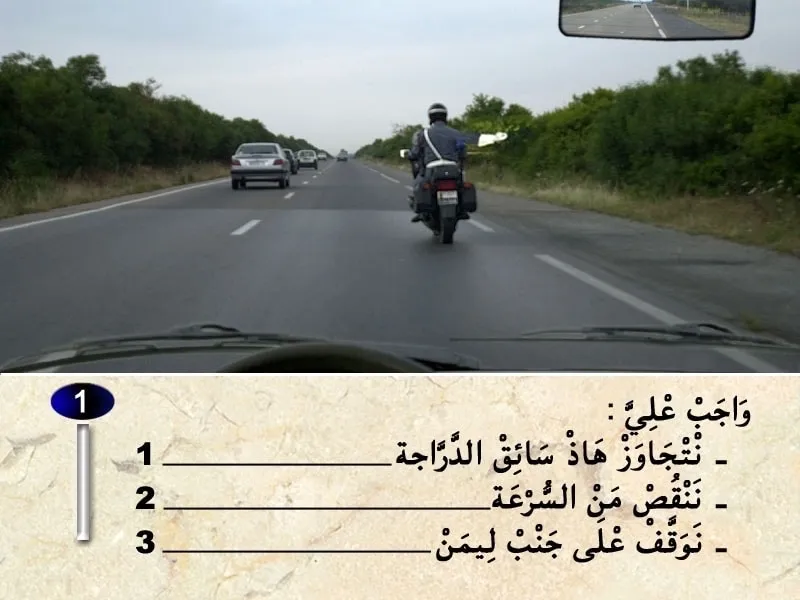
الكلافيي: 1–4 للجواب، Enter للتأكيد وللسؤال الجاي.
السلسلة 34 · النتيجة ديالك
0 / 40
السلسلة 34
السيارة (صنف B) · 40 سؤال، بالصوت، مع الجواب الصحيح والشرح.
السؤال 1
بيّن الجواب
الجواب الصحيح: 2
بالنسبة للدَّركي الذي يقود الدّراجة النارية، فالحركة التي يقوم بها تعني على أنه يجب عليّ الإنقاص من السرعة التي أسير بها.
السؤال 2
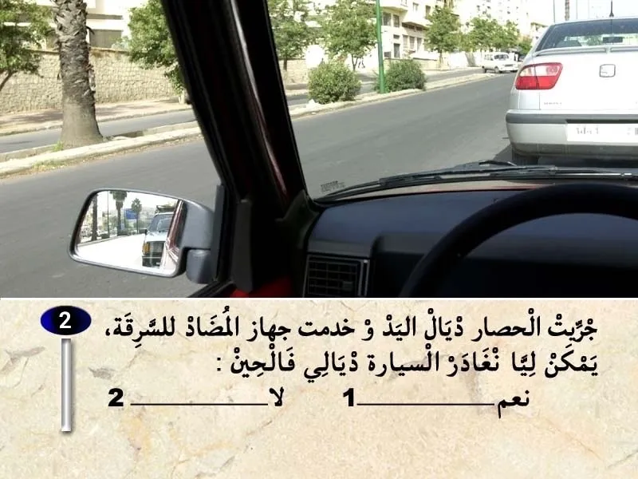
بيّن الجواب
الجواب الصحيح: 1
قمت بجر حصّار اليد وأيضا قمت بتشغيل جهاز المضاد للسّرقة (هذا ما يجب عليّ فعله كلّما أردت مغادرة السيّارة) بالنسبة للجملة مغادرة السّيارة في الحين تعني هل يمكنني أن أفتح باب السيّارة والمغادرة الان. كما نلاحظ في المراَة الجانبية اليسرى فلا توجد سيارة قادمة لكي أنتظر، لذلك يمكنني المغادرة الان. (بالنسبة للسيارة التي تظهر في المراَة الجانبية اليسرى فهي سيارة متوقّفة ولا تسير).
السؤال 3
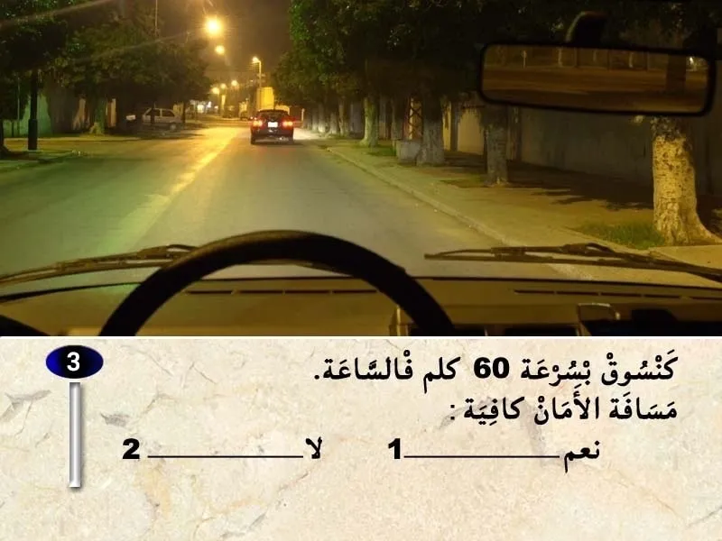
بيّن الجواب
الجواب الصحيح: 1
أسير بسرعة 60 كلم في الساعة، مسافة الأمان في هذه الحالة نقوم بحذف العدد الفردي والذي هو 0 ونقوم بضرب ما تبقى من عدد في 6، إذن 6 في 6 هي 36 متر. داخل المدينة نستعمل الأشجار أو أعمدة الإنارة العمومية لحساب مسافة الأمان، في الصور يوجد أشجار والمسافة بين كل شجرة وشجرة هي 10 أمتار. في الصورة يتّضح أن هنالك 4 فراغات بين كل شجرة، إذن تقريبا بيني وبين العربة التي أمامي يعني تقريبا 40 متر. إذن مسافة الأمان كافية (مسافة الأمان هي 36 متر كما قمنا بحسابها مسبقا).
السؤال 4
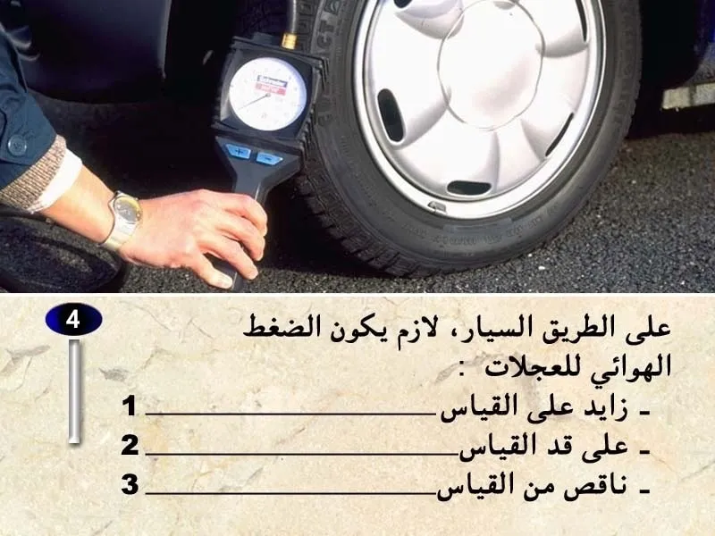
بيّن الجواب
الجواب الصحيح: 1
بالنسبة لتعليمات ضغط الهواء للعجلات فيكون مكتوب على ملصق على باب السيّارة أو في كتاب التعليمات للسائق، حيت تحتوي هذه المعلومات على نسبة الضغط الهوائي المناسب بالنسبة للعجلات الأمامية ونسبة الضغط الهوائي المناسب للعجلات الخلفية. لكن يمكننا زيادة الضغط الهوائي للعجلات قليلا إذا قمنا بإضافة حمولة للسّيارة أو إذا كنا سوف نستعمل الطّريق السّيار.
السؤال 5
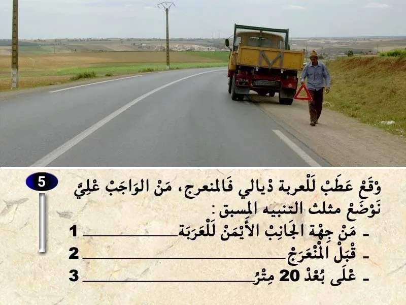
بيّن الجواب
الجواب الصحيح: 2
القاعدة الخاصة بمثلث التنبيه المسبق تقول: إذا كان لدينا عطب في المنعرج فبالنسبة لمثلث التّنبيه يجب وضعه قبل المنعرج.
السؤال 6
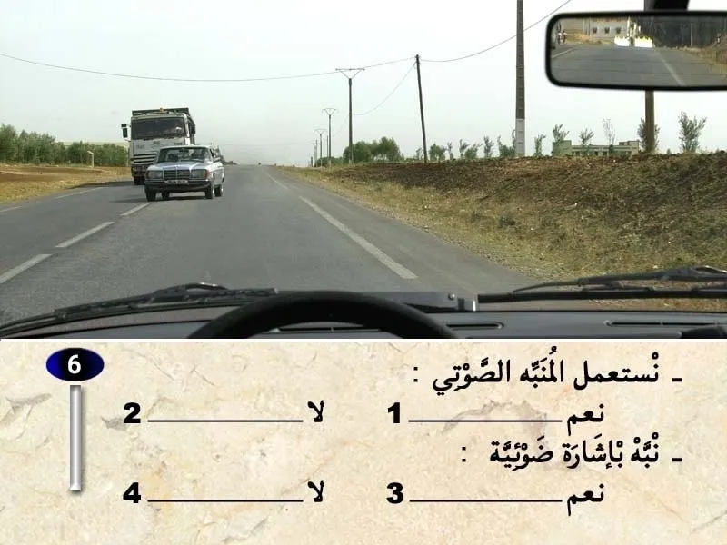
بيّن الجواب
الجواب الصحيح: 2 و 3
أتواجد في المسلك الخاص بي للسير، السيارة التي أمامي قامت بعملية التجاوز وهي الان قريبة جدا من الانتهاء من عملية التّجاوز و الاندماج في المسلك الخاص بها للسير، لكن لم تندمج بعد بشكل كامل في المسلك الخاص بها ويجب عليّ تنبيهها لكي تندمج في مسلكها خصوصا وأن المسافة بيننا ليست طويلة، إستعمال المنبّه الصوتي ممنوع إستعماله في حالة أن الخطر يوجد أمامي و ينظر الي مباشرة. إذن التّنبيه سوف يكون بالإشارة الضّوئية و سوف تكون فعّالة ويراها سائق العربة أكثر من المنبّه الصوتي، إذن في هذه الحالة يجب التّنبيه بإشارة ضوئية لكي يعرف سائق السيارة أن المسافة بيننا قصيرة ويجب عليه الاندماج في مسلكه الخاص وأن يكمل عملية تجاوزه بسرعة.
السؤال 7
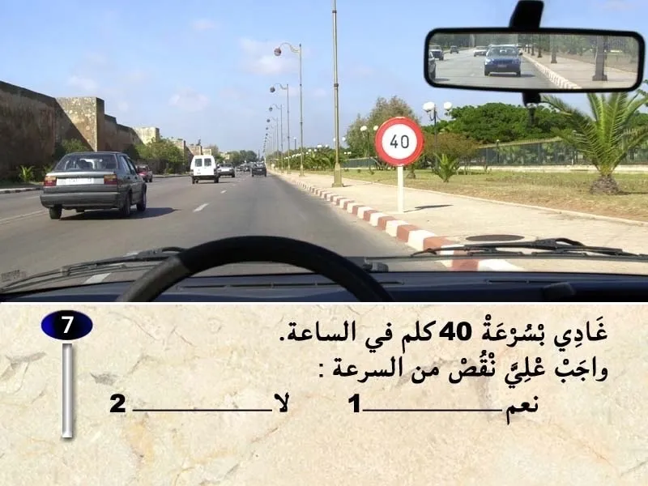
بيّن الجواب
الجواب الصحيح: 2
العلامة الطّرقية تعني تحديد السّرعة في 40 كلم في الساعة، وبما أنني أسير بسرعة 40 كلم في الساعة فأنا محترم القانون واللافتة الطّرقية، لذلك فليس من الواجب عليّ الإنقاص من السرعة. (لو كنت أسير بسرعة أكثر من 40 كلم في الساعة ففي هذه الحالة من الواجب عليّ الإنقاص من السرعة).
السؤال 8
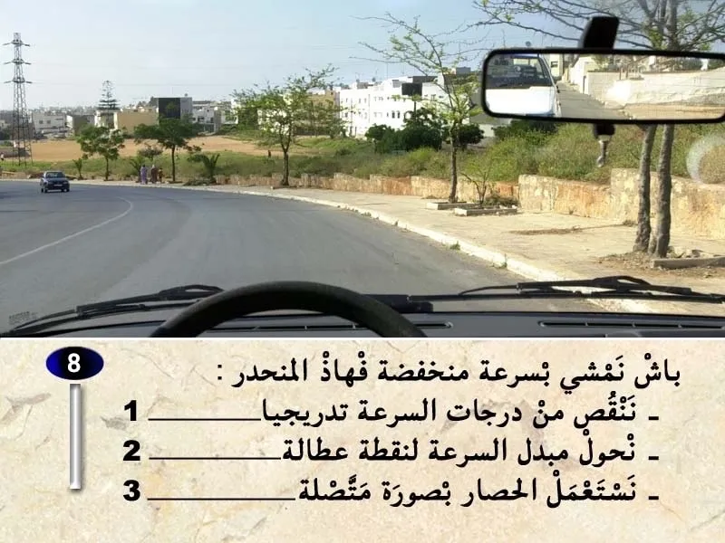
بيّن الجواب
الجواب الصحيح: 1
العربة تحتوي على 3 أنواع من الفرامل، توجد فرامل اليد، وتوجد الفرامل الرئيسية التي نستعمل فيها الأرجل، وثالثا فرامل المحرّك (علبة محول السرعات). الان في هذه الحالة لكي أسير بسرعة مخفضة في هذا المنحدر لا نستخدم فرامل اليد أثناء السير لأنه لا ينقص من السرعة ونستخدمه عندما تتعطّل الفرامل الرئيسية، ولا نستعمل الفرامل بصورة متّصلة بل نقوم بالإنقاص من درجات السرعة تدريجيا (درجات السرعة تعني مستويات السرعة) أي إذا كنت أسير بالمستوى الخامس أقوم بخفض مستوى السرعة إلى المستوى الرابع والثالث والثاني كحد أقصى (المستوى الأول لا يعتبر من الفرامل فهو خاص بعملية الإقلاع فقط). إذن الجواب الصحيح هو رقم 1.
السؤال 9
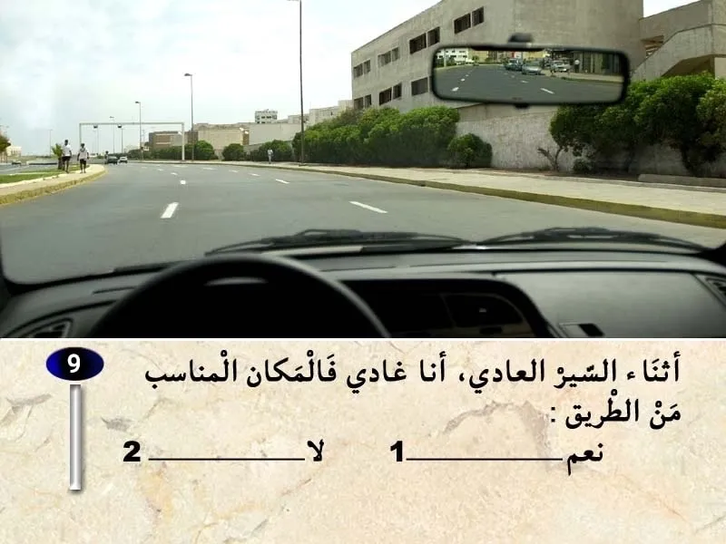
بيّن الجواب
الجواب الصحيح: 2
نلاحظ على أنه في هذا الطريق يوجد 3 مسالك للسّير، وبالنسبة للسّير العادي فدائما يتم في المسلك المتواجد على أقصى اليمين، والمسالك الاخرى فهي خاصة بعملية التّجاوز، إذن في السّير العادي فأنا غير متواجد في المكان المناسب من الطريق.
السؤال 10
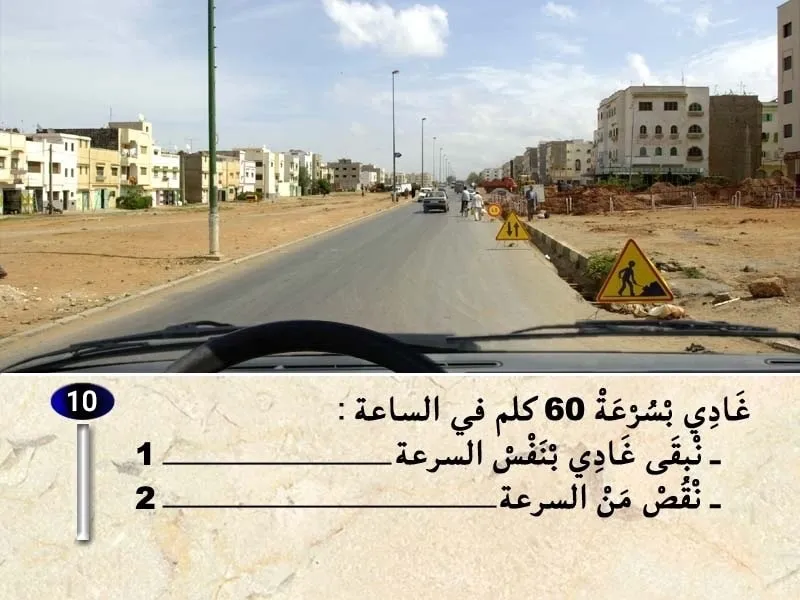
بيّن الجواب
الجواب الصحيح: 2
بالنسبة للعلامات الطّرقية الصفراء فهي علامات خطر مؤقتة، وبما أنه يوجد أشغال على الطّريق فيجب عليّ في هذه الحالة الإنقاص من السرعة وليس الاحتفاظ بنفس السرعة التي أسير بها.
السؤال 11
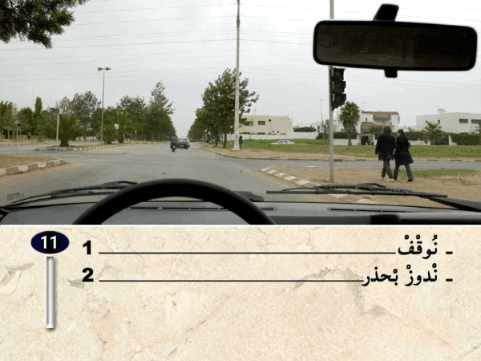
بيّن الجواب
الجواب الصحيح: 2
بما أن الضوء الأصفر رفراف والإشارة الضوئية لا تشتغل، في هذه الحالة أقوم بمراقبة الطّريق والانتباه والمرور بحذر. الإجابة الصحيحة رقم 2.
السؤال 12
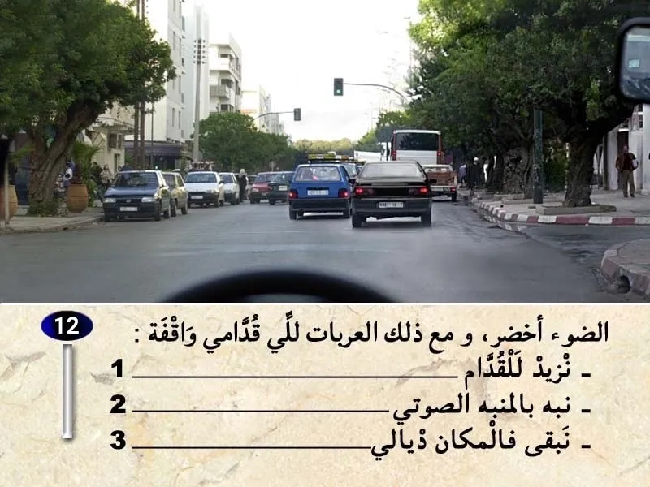
بيّن الجواب
الجواب الصحيح: 3
حركة السّير واقفة والعربات التي أمامي واقفة على الرغم من أن الإشارة الضوئية خضراء، لذلك من أداب الطريق أني أقف ولا أكمل السير للأمام لأنه يوجد على يميني ملتقى الطرق ويمكن أن تستعمله عربات أخرى للمرور، فإذا أكملت السير وحركة السّير واقفة فسوف أغلق ذلك الطريق على اليمين، لذلك من أداب الطّريق أني أقف وأنتظر العربات التي أمامي لكي تسير وأقوم بمتابعة السير. كما أن استعمال المنبّه الصوتي داخل المدينة ممنوع عندما لا يوجد خطر.
السؤال 13
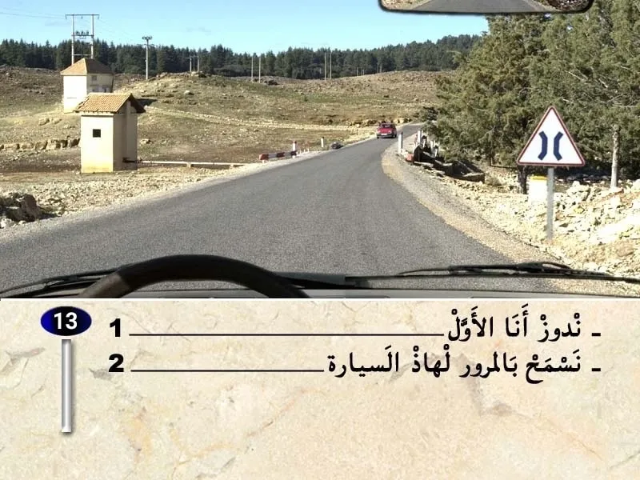
بيّن الجواب
الجواب الصحيح: 2
العلامة الطرقية تعني طريق ضيّقة على مسافة محدودة، وهذه العلامة ليس لها قاعدة تقول لنا من سوف يقوم بالمرور أولا، لكن يوجد مبدأ أدب الطريق، وهذا المبدأ يقول أن العربة التي تتواجد أولا في الطريق الضيّقة (الطريق الضيّقة تكون إما قنطرة أو مجرى ماء أو ..) يقوم بالمرور أولا، في هذه الحالة فإن العربة الحمراء التي أمامنا تتواجد أولا في تلك القنطرة أو المجرى المائي، لذلك بما أنها هي الأولى سوف أسمح لها بالمرور أولا وبعد ذلك أقوم بالمرور.
السؤال 14
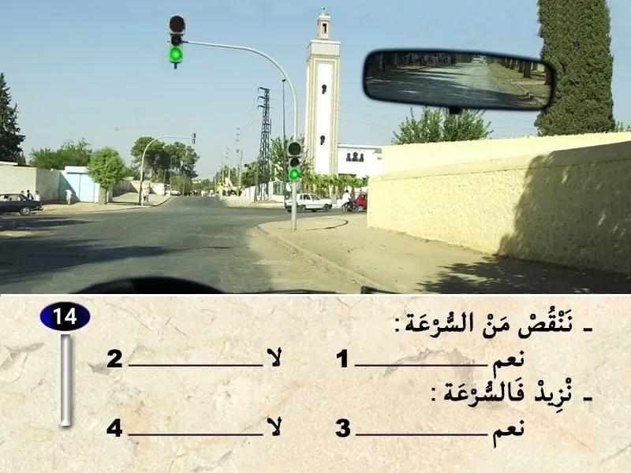
بيّن الجواب
الجواب الصحيح: 1 و 4
عند ملتقيات الطّرق فيجب علينا الإنقاص من السرعة والاستعداد للفرملة والتّنبيه بإشارة ضوئية في الليل والتّنبيه بالمنبّه الصوتي خارج المدينة. إذن في هذه الحالة بما أنه يوجد ملتقى الطّرق والإشارة الضوئية خضراء تسمح لي بالمرور فأقوم بالإنقاص من السرعة ولا أقوم بزيادة السرعة.
السؤال 15
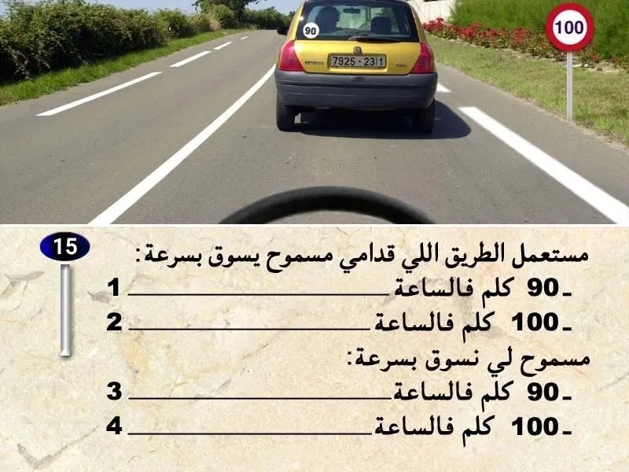
بيّن الجواب
الجواب الصحيح: 1 و 3 و 4
كما نلاحظ فإن العربة التي أمامي تحتوي على ملصق 90 كلم في الساعة، وهذا يعني على أن مستعمل الطريق الذي أمامي يوجد في الفترة الاختبارية ومسموح له بأن يسوق السيارة بسرعة 90 كلم في الساعة كسرعة قصوى، وبالنسبة لي بما أنني سائق محترف ويوجد علامة لتحديد السرعة في 100 كلم في الساعة، فيمكنني السياقة بسرعة 90 كلم في الساعة وكذلك 100 كلم في الساعة.
السؤال 16
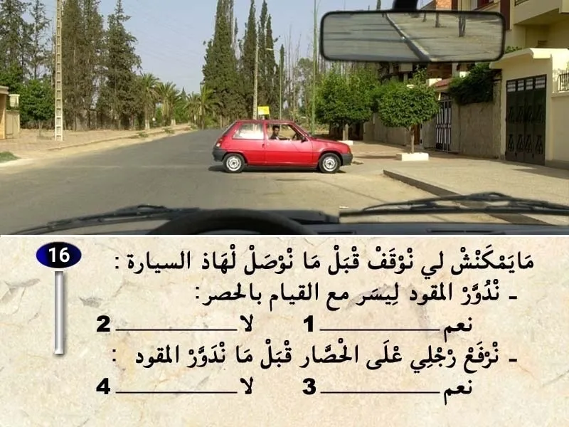
بيّن الجواب
الجواب الصحيح: 2 و 3
العربة لا تريد التوقّف، في هذه الحالة يجب القيام ببعض المناورات للتوقّف، إذا قمت بإستخدام الحصار (الفرامل) والمقود لن يشتغل إذا أردت تحويله لليسار لأن إستخدام الفرامل أولا سوف يثبث العجلات ولن تتحرك. لذلك يجب عليّ أن أرفع رجلي على الحصار (الفرامل) وأقوم بتحويل المقود.
السؤال 17
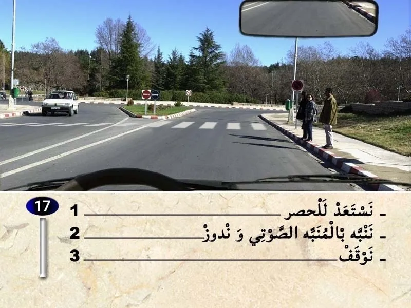
بيّن الجواب
الجواب الصحيح: 1
يتواجد بعض الراجلين فوق الرّصيف، وهم بعيدون قليلا عن ممر الراجلين، لا يمكننا استعمال المنبّه الصوتي على الراجلين، ولا يمكننا الوقوف لأن الراجلين غير موجودين وسط الطريق في ممر الراجلين، فقط يجب عليّ الانتباه وأن أستعد للحصر لأنه ممكن للرّاجلين أن يستعملو وسط الطريق للمرور للجهة الأخرى.
السؤال 18
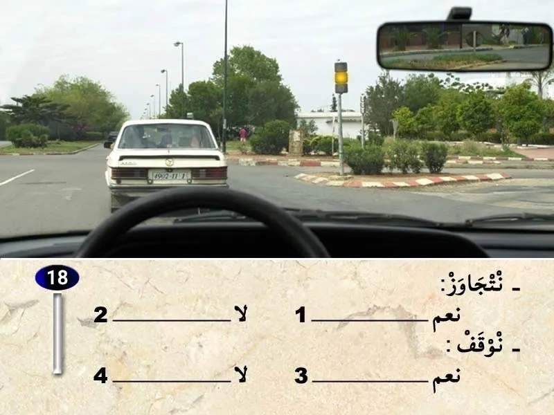
بيّن الجواب
الجواب الصحيح: 2 و 3
الإشارة الضوئية صفراء وهي تعني الاستعداد للوقوف لأنها سوف تتغير إلى اللون الأحمر، لذلك لا يمكنني تجاوز العربة البيضاء الان، يجب عليّ الوقوف لأن لون الإشارة الضوئية سوف يتغير إلى اللون الأحمر.
السؤال 19
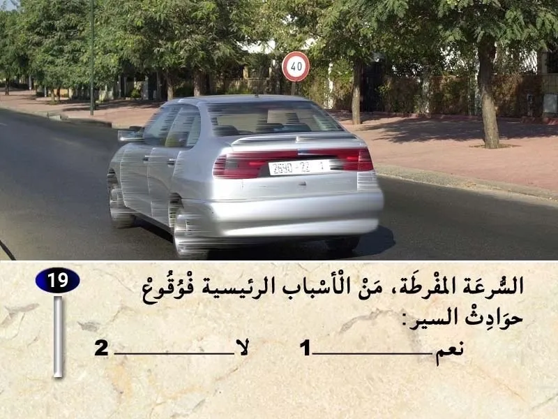
بيّن الجواب
الجواب الصحيح: 1
بطبيعة الحال فالسرعة دائما من بين الأسباب الرئيسية في حوادث السير، كلّما كانت السرعة كبيرة فنسبة وقوع حادثة سير تكون أعلى.
السؤال 20
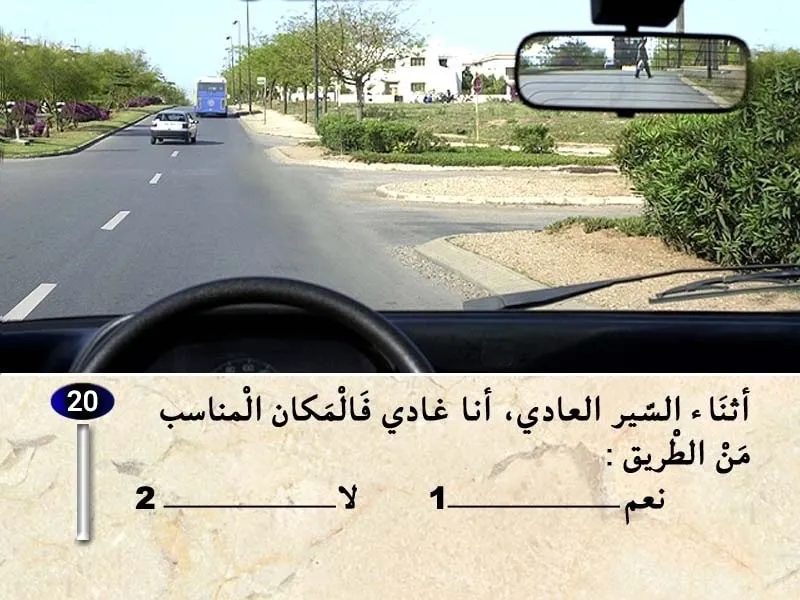
بيّن الجواب
الجواب الصحيح: 1
أنا متواجد في المسلك الموجود على اليمين، وهذا المسلك هو مخصص أثناء السّير العادي، إذن أثناء السّير العادي أنا أتواجد في المكان المناسب من الطريق.
السؤال 21
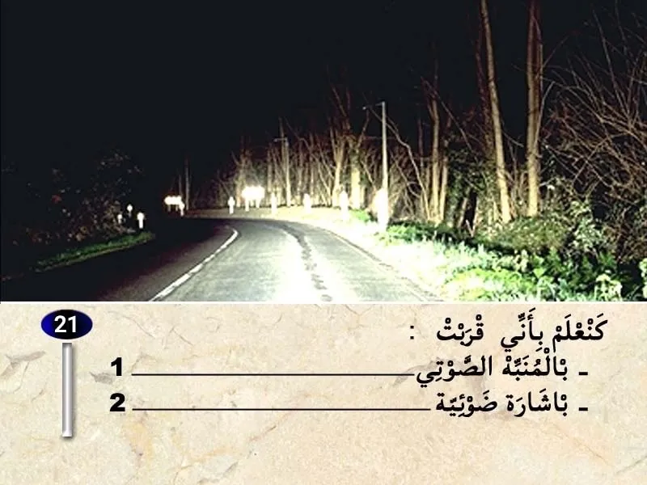
بيّن الجواب
الجواب الصحيح: 2
نتواجد في منعرج لليسار وفي الفترة الليلية، لكي أنبّه على أنني وصلت أقوم بذلك عن طريق الإشارة الضوئية وليس بالمنبه الصوتي، لأنه في الليل الإشارة الضوئية تكون ذات فعالية أكثر من المنبّه الصوتي.
السؤال 22
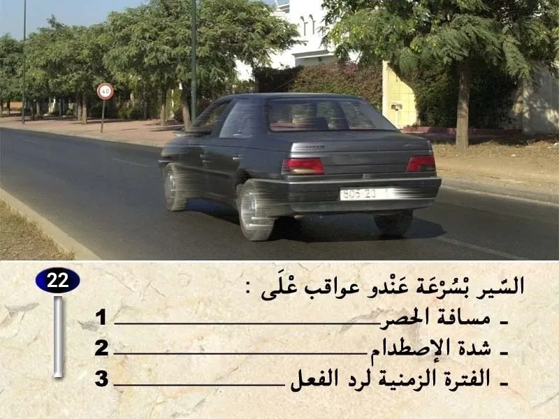
بيّن الجواب
الجواب الصحيح: 1 و 2
السّير بسرعة له عواقب على مسافة الحصر، لأنه سيارة تسير بسرعة 50 كلم في الساعة لن تكون لها مسافة حصر مثل سيارة تسير بسرعة 100 كلم في الساعة (كلّما زادت السرعة فإن مسافة الحصر تكون أطول)، وأيضا السّير بسرعة له عواقب على شدة الاصطدام لأنه سيارة تسير مثلا بسرعة 30 كلم في الساعة ووقع لها حادث فإن الاصطدام لن يكون كبير، لكن سيارة تسير بسرعة 100 كلم في الساعة ووقع لها حادث فإن الاصطدام هنا سوف يكون كبير جدا لأن السرعة كبيرة. وبالنسبة للفترة الزمنية لردة الفعل فليس لها علاقة بالسّير بسرعة (ردة الفعل لها علاقة بالسائق وانتباهه وحالته البدنية).
السؤال 23
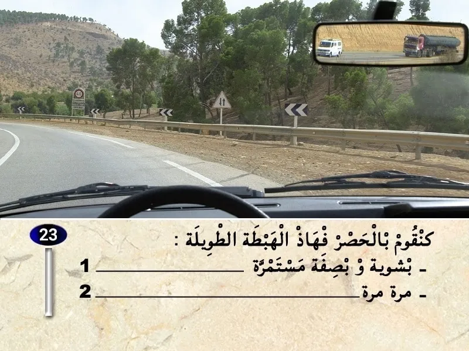
بيّن الجواب
الجواب الصحيح: 2
في هذا المنحدر ولكي أقوم بعملية الحصر (أي استعمال الفرامل) بشكل جيد وأمن، أقوم بذلك مرة مرة لكي أحصل على فرملة جيّدة. لا أقوم بإستعمال الفرامل بصفة مستمرة لأن العجلات سوف تثبت ولا أستطيع توجيه العربة خصوصا ونحن نتواجد في هذا المنحدر.
السؤال 24
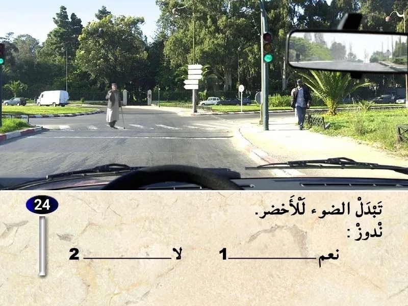
بيّن الجواب
الجواب الصحيح: 2
فعلا الإشارة الضوئية فهي خضراء، لكن يوجد راجل في ممر الراجلين، لذلك في هذه الحالة لا يمكنني المرور، يجب علي السماح للراجل بالمرور أولا وبعد ذلك أقوم بالمرور.
السؤال 25
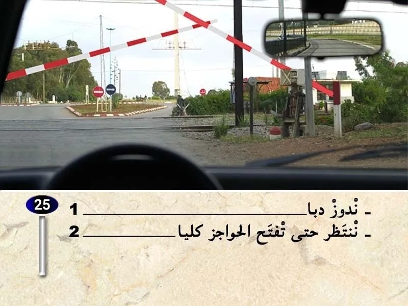
بيّن الجواب
الجواب الصحيح: 2
الحواجز لم تفتح بشكل كلي وهنالك خطر الاصطدام بها لو قمت بالمرور الان، لذلك يجب عليّ الانتظار إلى حين أن تفتح الحواجز بشكل كلّي وأقوم بالمرور.
السؤال 26
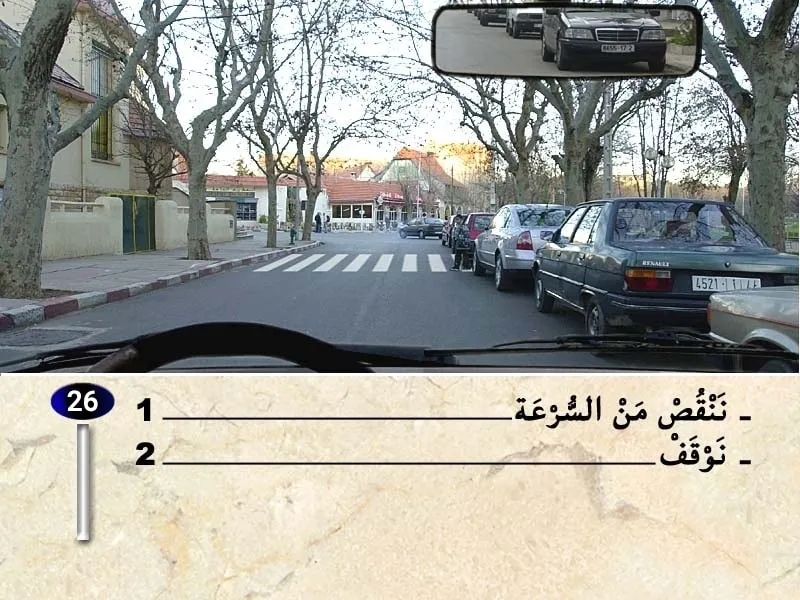
بيّن الجواب
الجواب الصحيح: 2
فهاد الحالة حنا قراب لممر الراجلين، وكاين طفل باغي يدوز. هنا ماكيبقاش كافي غير ننقصو من السرعة، بل خاصنا نوقفو قبل الممر ونخليو الطفل يدوز بأمان. صحيح أن قرب ممر الراجلين خاص السائق يكون حذر ويخفف السرعة، ولكن بما أن الطفل غادي يعبر ممر الراجلين، فالتصرف الواجب هو التوقف. إذن الجواب الصحيح هو رقم 2.
السؤال 27
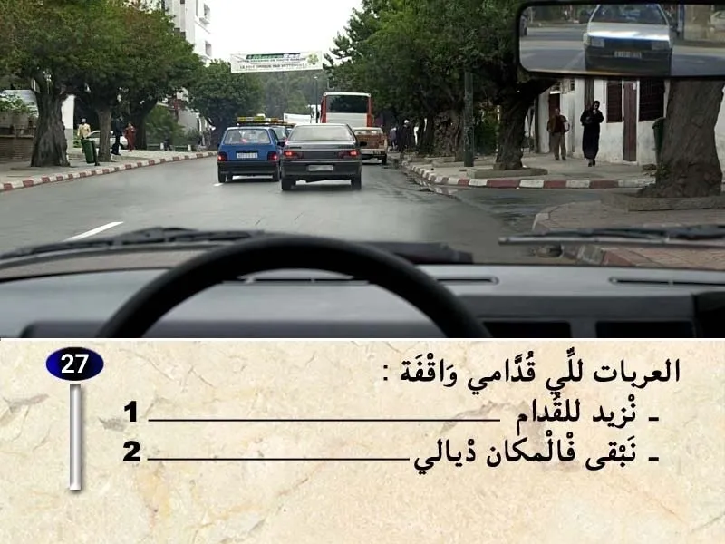
بيّن الجواب
الجواب الصحيح: 2
حركة السّير واقفة والعربات التي أمامي واقفة، لذلك من أداب الطريق أني أقف ولا أكمل السير لأنه يوجد على يميني ملتقى الطرق ويمكن أن تستعمله عربات أخرى للمرور، فإذا أكملت السير وحركة السّير واقفة فسوف أغلق ذلك الطريق على اليمين، لذلك من أداب الطّريق أني أقف وأنتظر العربات التي أمامي لكي تسير وأقوم بمتابعة السير.
السؤال 28
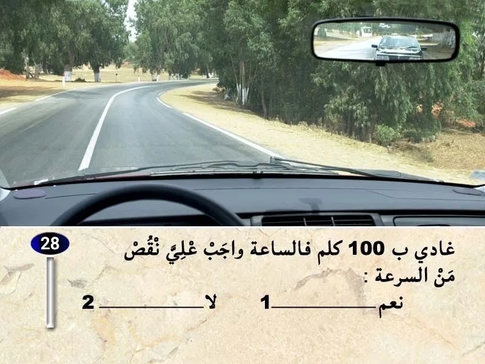
بيّن الجواب
الجواب الصحيح: 1
أسير بسرعة 100 كلم في الساعة وهي سرعة كبيرة خصوصا عندما أتواجد أمام منعرج، إذن في هذه الحالة في أنني أسير بسرعة كبيرة وأتواجد قرب منعرج فيجب عليّ الإنقاص من السرعة التي أسير بها لكي أستطيع التّحكم بشكل جيد بالعربة.
السؤال 29
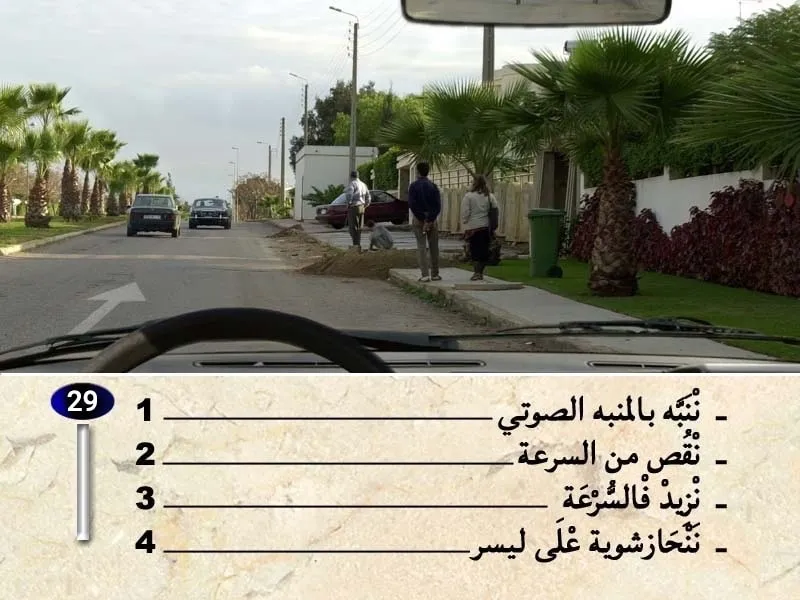
بيّن الجواب
الجواب الصحيح: 2 و 4
كما نعرف فالتّنبيه ممنوع على الرّاجلين كما أنه لا يوجد خطر ونتواجد داخل المجال الحضري، ولا نقوم بالزيادة في السرعة التي نسير بها، لكن بالنسبة لإنقاص من السرعة فيمكننا ذلك لأنه يوجد بعض الرّمل على الطريق وأيضا نقوم بالانحياز قليلا لليسار لكي لا نقوم بالاصطدام به.
السؤال 30
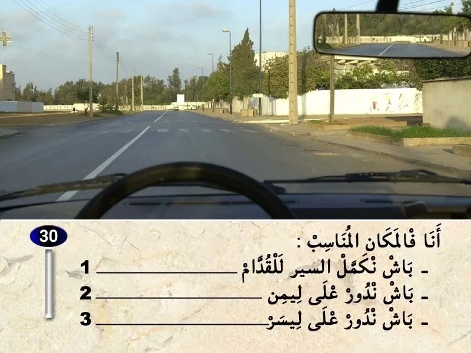
بيّن الجواب
الجواب الصحيح: 3
في هذه الحالة كما نلاحظ فنحن نسير على يسار الطّريق، هذه الوضعية فهي صحيحة لكي نقوم بالإنعطاف على اليسار عند ملتقى الطّرق القادم. انا لست في المكان المناسب للسّير للأمام، لانه يجب علي ان أسير أقصى اليمين وليس أن أسير على يسار الطّريق، كذلك أنا لست في مكان مناسب للإنعطاف على اليمين، لكي يكون الإنعطاف صحيح على اليمين يجب ان أكون متواجد أقصى اليمين. الجواب الصحيح هو رقم 3.
السؤال 31
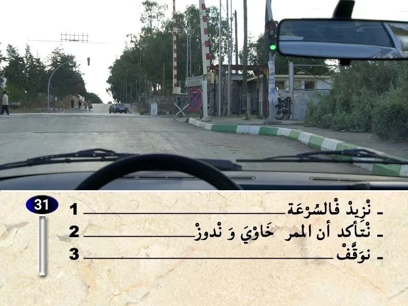
بيّن الجواب
الجواب الصحيح: 2
الحواجز مفتوحة والإشارة الضوئية خضراء إذن يمكنني المرور، لكن لا أقوم بالمرور بسرعة لأنه يوجد ملتقى طرق، يجب عليّ الانتباه وأقوم بالتاكد على أن الممر فارغ وأقوم بعد ذلك بالمرور.
السؤال 32
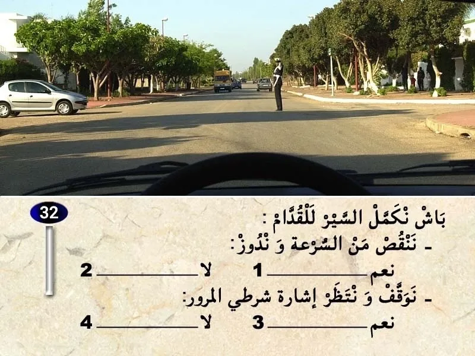
بيّن الجواب
الجواب الصحيح: 1 و 4
عندما نتواجد في ملتقى الطرق ويتواجد فيه شرطي المرور فتلغى جميع الإشارات الطّرقية الموجودة و يجب علينا إتباع تعليمات شرطي المرور، في هذه الحالة عندما يقف شرطي المرور هكذا (بالجنب) فهذا يعني أنه أعطاني حق الأسبقية في المرور. لذلك أقوم بإنقاص من السرعة والمرور وليس الوقوف وانتظار الإشارة، لأن هذه الإشارة من شرطي المرور تعني أنه يعطيني الحق في المرور الان وليس الوقوف.
السؤال 33
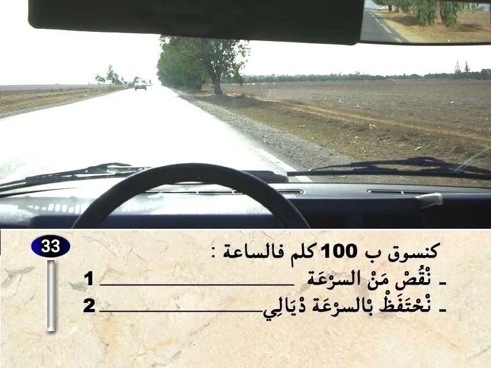
بيّن الجواب
الجواب الصحيح: 1
أسير بسرعة 100 كلم في الساعة و أتواجد في طريق السرعة فيها محدودة في 100 كلم في الساعة، يعني لا يوجد مشكل، لكن في هذه الحالة فالرؤية صعبة (أشعة الشمس قوية على الطريق) ويوجد عربات قادمة من الاتّجاه المعاكس، لذلك في هذه الظروف التي تكون فيها الرؤية صعبة فمن الأفضل أن أقوم بالإنقاص من السرعة.
السؤال 34
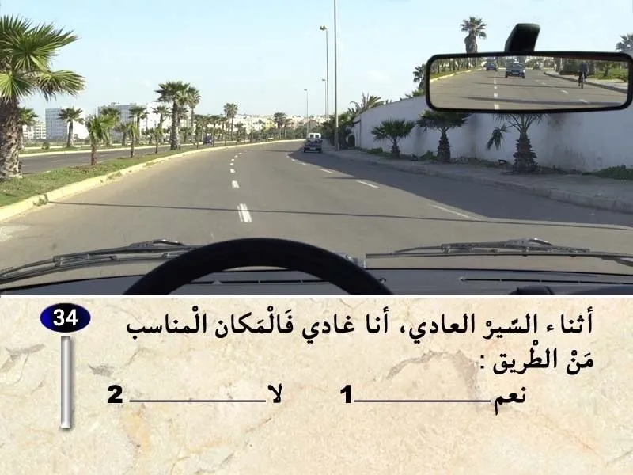
بيّن الجواب
الجواب الصحيح: 2
أنا الان أتواجد في مسالك التّجاوز، بالنسبة للسّير العادي فالمكان المناسب للسير فهو المسلك المتواجد أقصى اليمين لأنه هو المسلك الخاص بالسير العادي.
السؤال 35
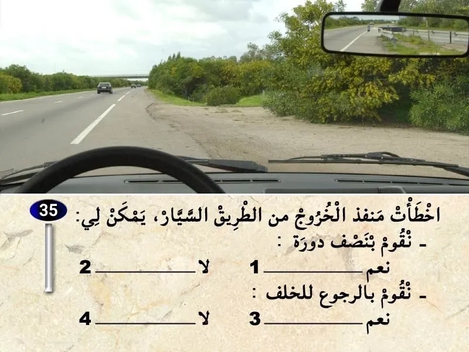
بيّن الجواب
الجواب الصحيح: 2 و 4
إذا أخطأت في منفذ الخروج من الطريق سيّار، فلا يمكنني القيام بنصف دورة لأنه في هذه الحالة الطريق السيار ذات إتجاه واحد وسوف ألتقي بسيارات تأتي أمامي إذا قمت بعمل نصف دورة، إذن هذا ممنوع، وبالنسبة للرجوع للخلف فهو ممنوع أيظا في الطّريق السيار.
السؤال 36
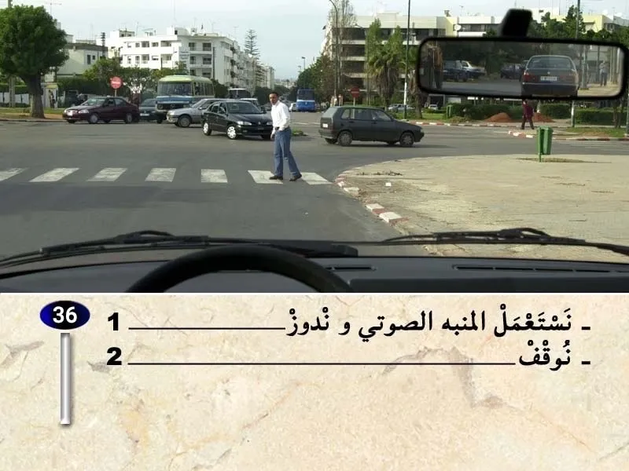
بيّن الجواب
الجواب الصحيح: 2
الراجل اندمج في ممر الراجلين ولديه حق الأسبقية في المرور، لذلك يجب عليّ الوقوف والسماح له بالمرور وليس استعمال المنبّه الصوتي والمرور.
السؤال 37
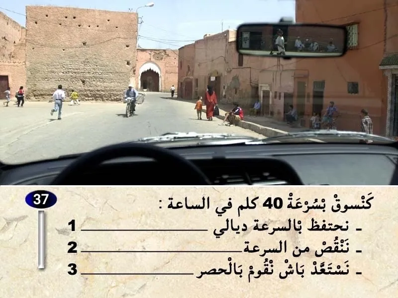
بيّن الجواب
الجواب الصحيح: 2 و 3
حتى وإن لم تكن السرعة التي نسير بها كبيرة ففي هذه الحالة يوجد الكثير من الأشخاص في الطريق ويجب عليّ الانتباه، لذلك يجب عليّ الإنقاص قدر الإمكان من السرعة وكذلك أستعد للقيام بالحصر (استعمال الفرامل) لأنه يمكن في أي لحظة أن يدخل شخص للطريق دون أن ينتبه لي، لذلك يجب عليّ الاستعداد للفرملة.
السؤال 38
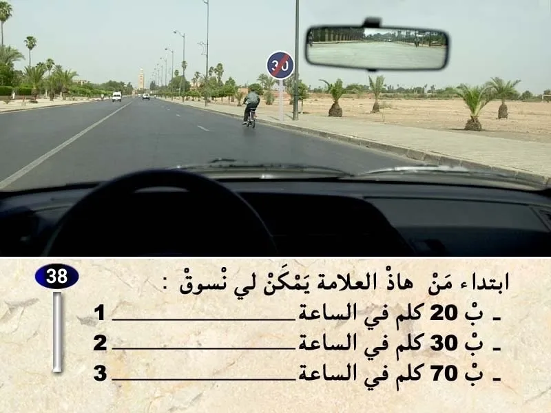
بيّن الجواب
الجواب الصحيح: 1 و 2
بالنسبة للعلامة الطّرقية فهي تعني نهاية السرعة الدنيا الإجبارية، (قبل هذه العلامة كانت هنالك علامة تشبهها لكن بدون الخط الأحمر وتسمى السرعة الدنيا الإجبارية، كانت تجبرنا على السّير بسرعة 30 كلم في الساعة على الأقل، يعني كانت تجبرني بالسّير بسرعة 30 كلم في الساعة فما فوق مع إحترام المكان الذي أنا فيه هل أنا في المدينة أو خارج المدينة). الان هذه العلامة التي توجد في الصورة تسمّى نهاية السرعة الدنيا الإجبارية وهي تعني على أنه الإجبار الذي كان سابقا والذي كان يجبرني بالسّير بسرعة 30 كلم في الساعة فما فوق فقط إنتهى والان يمكنني السيّر بأي سرعة أريد بدون إجبار الذي كان سابقا. لذلك يمكنني السّير بسرعة 20 كلم في الساعة إلى سرعة 60 كلم في الساعة كحد أقصى لأنني أتواجد داخل المدينة والسرعة القصوى داخل المدينة هي 60 كلم في الساعة.
السؤال 39
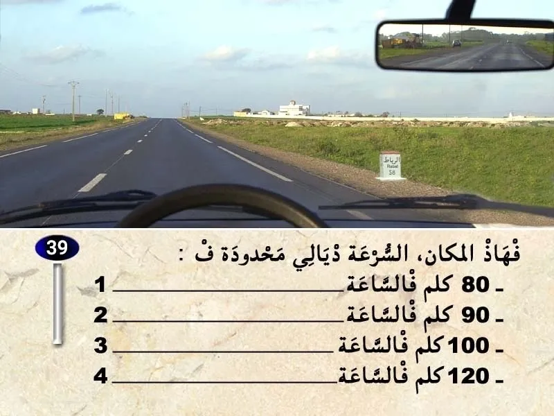
بيّن الجواب
الجواب الصحيح: 3
بالنسبة للسوى المكتوب فيها الرباط وعدد الكيلومترات المتبقية فهي تعني أنني أتواجد خارج المجال الحضري، وخارج المجال الحضري وفي طريق وطنية فالسرعة محدودة في 100 كلم في الساعة.
السؤال 40
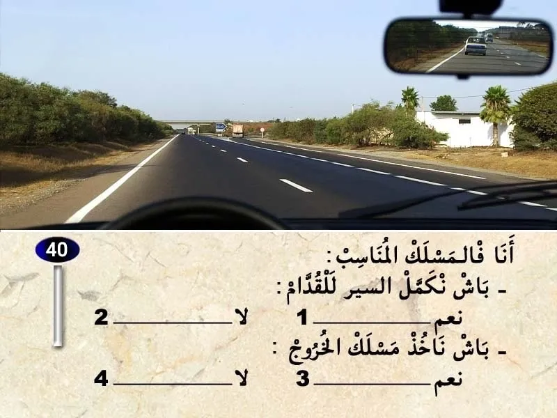
بيّن الجواب
الجواب الصحيح: 2 و 4
أنا لا أتواجد في المسلك المناسب لإكمال السير للأمام، المسلك الموجود على اليسار والذي أتواجد فيه الان هو مسلك التّجاوز وأقوم باستعماله أثناء عملية التجاوز لعربة، وبما أنني لا أقوم بتجاوز عربة فيجب عليّ أن أقوم بالسير في المسلك المتواجد على اليمين لأنه المسلك الخاص بالسير العادي. وأيضا أنا لا أتواجد في المسلك المناسب لكي اخد مسلك الخروج، لأن مسلك الخروج هو المسلك المتواجد على أقصى اليمين.